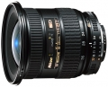

器材库 > 35mm画幅AF变焦镜头 > AF 18-35/3.5-4.5 D

详细规格
镜头类型
广角变焦镜头
发布日期
2000-08
焦距
18mm-35mm
最大光圈
f/3.5-f/4.5
最小光圈
f/22
视角（对角）
100.00-62.00
镜头结构
11片/8组
非球面镜片
1片
低/超低色散镜片
1片
光圈叶片
7片
最近对焦距离
33cm
最大放大倍率
0.167
滤镜口径
77mm
镜头卡口
Nikon AF
防抖
否
颜色
黑色
尺寸
82.00x82.00mm
重量
370g
匿名网友2018-07-19 11:113.75 分
操作性 4.00耐用性 3.50性价比 4.00解像力 3.50色彩还原 4.00机械结构 3.50
匿名网友2018-01-05 10:29
匿名网友2018-01-05 10:28
duzhongcha2015-06-22 23:414.67 分
操作性 5.00耐用性 4.50性价比 5.00解像力 4.50色彩还原 4.50机械结构 4.50
rush19822015-02-03 12:304.42 分
操作性 5.00耐用性 4.50性价比 5.00解像力 3.50色彩还原 4.50机械结构 4.00
杯中风筝2014-07-14 13:124.92 分
操作性 5.00耐用性 4.50性价比 5.00解像力 5.00色彩还原 5.00机械结构 5.00
杯中风筝2014-07-14 13:04
柒郎2014-01-18 19:163 分
操作性 3.00耐用性 3.00性价比 3.00解像力 3.00色彩还原 3.00机械结构 3.00
jeep50422013-01-04 20:504.67 分
操作性 5.00耐用性 5.00性价比 5.00解像力 4.50色彩还原 4.50机械结构 4.00
云里金刚2012-10-05 13:594.83 分
操作性 4.50耐用性 5.00性价比 5.00解像力 5.00色彩还原 5.00机械结构 4.50
icebear22012-08-19 18:074.58 分
操作性 5.00耐用性 4.50性价比 5.00解像力 4.50色彩还原 4.50机械结构 4.00
ikinari2012-04-14 22:464.33 分
操作性 4.50耐用性 4.50性价比 4.50解像力 3.50色彩还原 4.50机械结构 4.50
yangyu9999992012-04-13 15:474 分
操作性 4.00耐用性 4.00性价比 4.00解像力 4.00色彩还原 4.00机械结构 4.00
htabc2012-03-05 09:294.67 分
操作性 5.00耐用性 4.50性价比 5.00解像力 4.50色彩还原 5.00机械结构 4.00
widgeon2012-01-04 13:512.92 分
操作性 4.50耐用性 4.50性价比 0.50解像力 3.50色彩还原 1.00机械结构 3.50
产品图 / 样片
外观图
评测 / 相关文章
- ［试用］小女友转接一堆尼康口镜头 （存档）
- ［资讯］由胶卷到数码，随侃尼康5款广角头 （存档）
相关文章
- ［试用］小女友转接一堆尼康口镜头 （存档）
- ［资讯］由胶卷到数码，随侃尼康5款广角头 （存档）